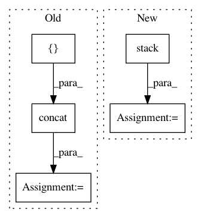

6b48055fdfe3c628833ed26ca394ef2fb1d97f82,niftynet/layer/resampler.py,ResamplerLayer,_resample_nearest,#ResamplerLayer#Any#Any#,58
Before Change
tf.round(sample_coords), in_spatial_size)
batch_ids = tf.reshape(
tf.range(batch_size), [batch_size] + [1] * (out_spatial_rank + 1))
batch_ids = tf.tile(batch_ids, [1] + out_spatial_size + [1])
output = tf.gather_nd(
inputs, tf.concat([batch_ids, spatial_coords], -1))
if self.boundary == "ZERO":
scale = 1. / (tf.constant(in_spatial_size, dtype=tf.float32) - 1)
mask = tf.logical_and(
After Change
spatial_coords = self.boundary_func(
tf.round(sample_coords), in_spatial_size)
output = tf.stack([
tf.gather_nd(img, coords) for (img, coords) in
zip(tf.unstack(inputs), tf.unstack(spatial_coords))])
if self.boundary == "ZERO":
scale = 1. / (tf.constant(in_spatial_size, dtype=tf.float32) - 1)
mask = tf.logical_and(
In pattern: SUPERPATTERN
Frequency: 3
Non-data size: 5
Instances
Project Name: NifTK/NiftyNet
Commit Name: 6b48055fdfe3c628833ed26ca394ef2fb1d97f82
Time: 2017-10-26
Author: wenqi.li@ucl.ac.uk
File Name: niftynet/layer/resampler.py
Class Name: ResamplerLayer
Method Name: _resample_nearest
Project Name: google/tf_mesh_renderer
Commit Name: 8aaabd6dfcd2f4ae5618ef08657bbba82e8bd69f
Time: 2019-05-28
Author: david.erler@gmail.com
File Name: mesh_renderer/rasterize_triangles.py
Class Name:
Method Name: rasterize_clip_space
Project Name: dpressel/mead-baseline
Commit Name: 509453992838a524f6442d4e0f07a034390ae1f7
Time: 2020-02-13
Author: dpressel@gmail.com
File Name: layers/eight_mile/tf/layers.py
Class Name: BiLSTMEncoderAll1
Method Name: call